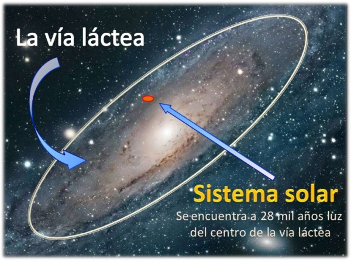

Mercurio
Es el planeta más cercano al Sol y el más pequeño del sistema solar. Tiene una superficie rocosa y desértica, sin atmósfera y con temperaturas extremas que oscilan entre los -173°C y los 427°C.
Venus
Conocido como el planeta gemelo de la Tierra debido a su tamaño y composición similares. Tiene una atmósfera densa y tóxica compuesta principalmente de dióxido de carbono, con temperaturas que pueden alcanzar los 471°C.

Tierra
El único conocido por albergar vida. Tiene una atmósfera rica en oxígeno y nitrógeno, y una temperatura media de 15°C.

Marte
Conocido como el planeta rojo debido a su coloración. Tiene una atmósfera delgada compuesta principalmente de dióxido de carbono, con temperaturas que oscilan entre los -143°C y los 35°C.

Jupiter
Es el más grande de todos. Es un gigante gaseoso con una atmósfera compuesta principalmente de hidrógeno y helio, y tiene una serie de lunas y anillos.

Saturno
Conocido por sus espectaculares anillos. Es un gigante gaseoso con una atmósfera compuesta principalmente de hidrógeno y helio, y tiene una serie de lunas.

Urano
Conocido por su inclinación axial extrema. Es un gigante de hielo con una atmósfera compuesta principalmente de hidrógeno, helio y metano, y tiene una serie de lunas y anillos.

Neptuno
Conocido por su coloración azulada. Es un gigante de hielo con una atmósfera compuesta principalmente de hidrógeno, helio y metano, y tiene una serie de lunas y anillos.

Things may come to those who wait, but only the things left by
those who hustle.
Un poco de historia
¿Qué es el sistema solar?
Es un sistema planetario formado por una estrella (el Sol) y los
cuerpos celestes que giran a su alrededor, como planetas, lunas,
asteroides y cometas.
¿Cómo se formó el sistema solar?
Se cree que se originó a partir de una nube de gas molecular que
colapsó por la gravedad o por la explosión de una supernova
cercana, dando lugar a una protoestrella y un disco de material
que se convirtió en los planetas y otros objetos.
¿Qué partes conforman el sistema solar?
El sistema solar se compone del Sol, ocho planetas (cuatro
rocosos y cuatro gigantes gaseosos), cinco planetas enanos, dos
cinturones de asteroides (el de asteroides y el de Kuiper), una
nube de cometas (la nube de Oort) y el espacio interplanetario.
¿Dónde estamos?

El sistema solar se ubica en el brazo de Orión o Local, uno de los
brazos espirales de la galaxia Vía Láctea, a unos 28.000 años luz
del centro galáctico. El sistema solar más cercano al nuestro es
Alfa Centauri, a 4,4 años luz de distancia.